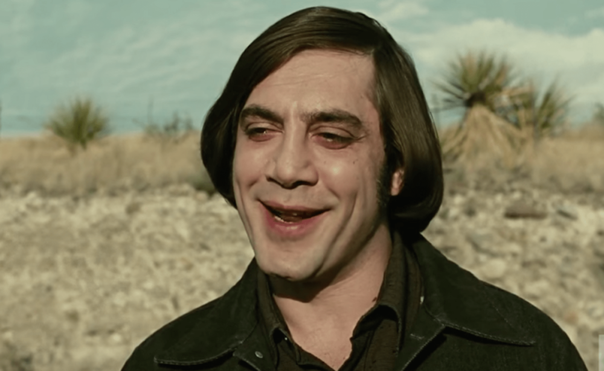
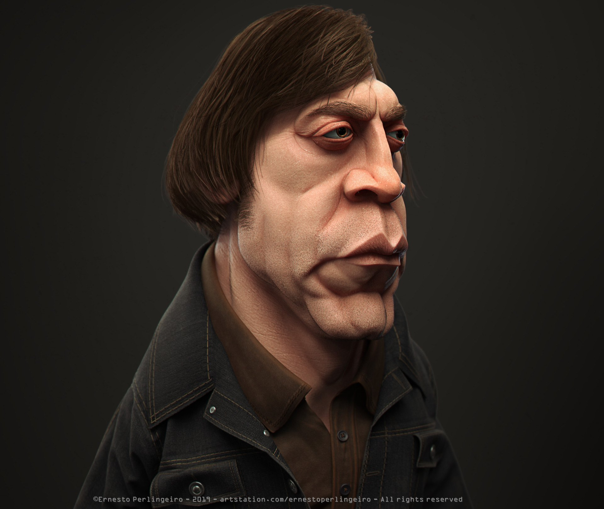

Антон Чігур — це персонаж із фільму No Country for Old Men.
Він є одним із найпохмуріших і найзагадковіших антагоністів у сучасному кіно. Чігур — холоднокровний найманий убивця, який діє без емоцій і сумнівів. Його вчинки підпорядковані власному суворому кодексу, а людське життя для нього часто залежить від випадку — інколи буквально від підкидання монети, яка вирішує долю людини. Спокійний голос, холодний погляд і повна незворушність роблять його схожим не просто на злочинця, а на уособлення невблаганної долі. Він рухається вперед тихо й неминуче, немов тінь, що наздоганяє тих, кому судилося зустрітися з ним. Образ Антона Чігура став культовим багато в чому завдяки грі актора Javier Bardem, який створив одного з найзапам’ятовуваніших лиходіїв у історії кіно.